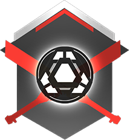
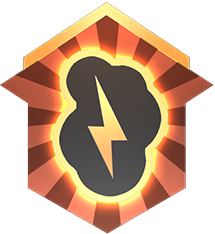

Frontier Defense: A Guide
|
Overview Difficulties ⤷ Easy
⤷ Normal
⤷ Hard
⤷ Master
⤷ Insane
Enemies⤷ Grunts
⤷ Shield Captains
⤷ Spectres
⤷ Mortar Spectres
⤷ Stalkers
⤷ Ticks
⤷ Nuke Titans
⤷ Mortar Titans
⤷ Arc Titans
⤷ Sniper Titans
⤷ Ion
⤷ Ronin
⤷ Legion
Waves⤷ Homestead
⤷ Forwardbase Kodai
⤷ Black Water Canal
⤷ War Games
⤷ Rise
Aegis Upgrades⤷ Ion
⤷ Scorch
⤷ Ronin
⤷ Tone
⤷ Legion
⤷ Monarch
|
Difficulties
EasyUnlocked Immediately | |
| "Crush the opposition." • Players cannot share money through the Armory. • Enemy Titans have 5000 less HP. • Enemy Reapers have 2000 less HP. • Mortar Spectres take 10 seconds to set up before firing. • Grunts do not have anti-Titan weapons. • $700 per wave completed. • The Harvester has 6000 shields. |
|
NormalUnlocked Immediately | |
 |
"Recommended for experienced players." • Enemy Titans have 2500 less HP. • Enemy Reapers have 1000 less HP. • Mortar Spectres take 10 seconds to set up before firing. • Grunts do not have anti-Titan weapons. • $700 per wave completed. • The Harvester has 6000 shields. |
HardAegis Level 5 with any Titan | |
| "Skilled play is required." • Enemy Titans and Reapers have normal HP. • Mortar Spectres take 5 seconds to set up before firing. • Mortar Spectres deploy a Shield while preparing to fire. • Grunts have 2 anti-Titan weapons per squad. • Players take 50% more damage. • $600 per wave completed. • The Harvester has 5000 shields. |
|
MasterAegis Level 11 with any Titan | |
| "Only the best of the best will succeed." • Enemy Titans and Reapers have normal HP. • All enemy Titans deploy with overshields. • Mortar Spectres take 5 seconds to set up before firing. • Mortar Spectres deploy a Shield while preparing to fire. • Grunts have 4 anti-Titan weapons per squad. • Each Grunt squad has a Shield Captain. • Players take 150% more damage. • $600 per wave completed. • Earn/Core meter rate is ~70% the rate in other difficulties. • The Harvester has 4000 shields. |
|
InsaneFeatured Mode, rotating map | |
 |
"You will not survive." • Enemy Titans and Reapers have normal HP. • All enemy Titans deploy with overshields. • Mortar Spectres take 5 seconds to set up before firing. • Mortar Spectres deploy a Shield while preparing to fire. • Grunts have 4 anti-Titan weapons per squad. • Each Grunt squad has a Shield Captain. • Players take 150% more damage. • $600 per wave completed. • Earn/Core meter rate is ~70% the rate in other difficulties. • The Harvester has 4000 shields. • Pilots' anti-Titan weapons have finite ammo reserves. • Minimap is disabled. • No retries. |
| ⤴ Top | |
Aegis Upgrades
Ion | |
Split Shot PowerAegis Rank 2 | |
 |
"Split Shots deal more damage." • Increases Splitter Cannon's damage per bolt when firing in ADS from 15.4 × 3 to 19.25 × 3 against infantry and 46.2 × 3 to 61.6 × 3 against Titans to 22 × 3 to 27.5 × 3 and 66 × 3 to 88 × 3 respectively. • With the Refraction Lens kit equipped, this becomes an increase from 12.1 × 5 to 15.13 × 5 against infantry and 36.3 × 5 to 48.4 × 5 against Titans to 15.4 × 5 to 19.25 × 5 and 46.2 × 5 to 61.6 × 5 respectively. |
Chassis UpgradeAegis Rank 5 | |
| "Ion's Health is increased." • Increases Ion's total HP from 10000 to 12500, equivalent to an Ogre. |
|
Energy StorageAegis Rank 8 | |
| "Ion's max Energy is increased." • Increases Ion's total Energy pool from 1000 to 1250. |
|
Split Shot EfficiencyAegis Rank 11 | |
 |
"Split Shots require less energy." • Decreases the energy consumption of the Splitter Cannon from 30 per shot to 20 per shot. • With the Refraction Lens kit equipped, this becomes a decrease from 34.5 per shot to 23 per shot. |
Shield UpgradeAegis Rank 14 | |
 |
"Ion's max Shield is increased." • Increases Ion's overshield capacity from 2500 to 5000. |
Energy RegenAegis Rank 17 | |
| "Ion regenerates Energy 25% faster." • The total time to fully regenerate your energy from empty is cut from 15.63 sec to 12.5 sec. |
|
Reflex CannonAegis Rank 20 | |
| "Kills extend the duration of Laser Core." • Titan kills grant an extra 2.5 seconds to core time. • Reaper kills grant an extra 1.5 seconds. • Any other kill grants an extra 0.5 seconds. |
|
| ⤴ Top | |
Scorch | |
Double ThreatAegis Rank 2 | |
 |
"Thermite Launcher now fires two shots before needing to reload." • Instead of firing and instantly reloading, the Thermite Launcher will switch to a segmented reload system just like the Mastiff. • Inserting a shell will take 1.6 seconds, while closing the launcher will take 0.8 seconds. • The Launcher will have a rate of fire 1.2 shells per second (72 RPM) and be fired semi-auto. |
Chassis UpgradeAegis Rank 5 | |
 |
"Scorch's Health is increased." • Increases Scorch's total HP from 12500 to 15000, equivalent to a Monarch with Superior Chassis activated. |
Hot StreakAegis Rank 8 | |
 |
"Thermite damage builds up a Core Meter multiplier." • Damage done with thermite adds to a new meter. When the meter is full, all core gain is earned at 1.5× normal rate, as long as you keep doing damage to maintain the meter. • Note that this is only caused specifically by thermite damage, meaning only thermite from Launcher shells, ignited Incendiary Traps, Flame Wall, and Flame Core itself maintain the meter. |
Roaring FlamesAegis Rank 11 | |
 |
"Thermite damage is increased." • All thermite damage increased by 20%. All of it. Follows the same rules as Hot Streak with what its bonus applies to. |
Shield UpgradeAegis Rank 14 | |
| "Scorch's Max Shield is increased." • Increases Scorch's overshield capacity from 2500 to 5000. |
|
Triple ThreatAegis Rank 17 | |
 |
"Thermite Launcher now fires three shots before needing to reload." • It's Double Threat, but Tripled. Same numbers apply to reload times and fire rate. |
Explosive BarrelsAegis Rank 20 | |
| "Igniting an Incediary Trap now triggers an initial explosion." • Incendiary Traps will have an initial burst of damage when ignited, doing an instant 500 damage within 22 feet. |
|
| ⤴ Top | |
Northstar | |
Explosive TrapsAegis Rank 2 | |
 |
"Tether traps explode when they break." • Tether Traps will explode when either destroyed or when expiring, doing an instant 1000 damage within 22 feet. |
Chassis UpgradeAegis Rank 5 | |
| "Northstar's health is increased." • Increases Northstar's total HP from 7500 to 10000, equivalent to an Atlas. |
|
Plasma Railgun: Quick ChargeAegis Rank 8 | |
| "Plasma Railgun charges faster." • The Railgun will be fully charged in 1.35 seconds, decreased from the base 2.25 seconds. |
|
Trap MasteryAegis Rank 11 | |
| "Northstar has two charges of Tether Traps." • Each individual charge will have the same cooldown as normal, 20 seconds. |
|
Shield UpgradeAegis Rank 14 | |
 |
"Northstar's max shield is increased." • Increases Northstar's overshield capacity from 2500 to 5000. |
Plasma Railgun: Critical HitAegis Rank 17 | |
| "Plasma Railgun critical hits deal increased damage." • Increases the multiplier for critical hits with the Railgun from 1.5× to 2.0× damage. |
|
Twin ClusterAegis Rank 20 | |
| "Cluster Missile now fires two missiles." • There is a 0.1 sec delay between each rocket firing. |
|
| ⤴ Top | |
Ronin | |
Sword MasteryAegis Rank 2 | |
| "Melee attacks deal more damage." • Base melee damage increased from 625 to 781.25. • Sword Core melee damage increased from 2025 to 2531.5. |
|
Chassis UpgradeAegis Rank 5 | |
| "Ronin's health is increased." • Increases Ronin's total HP from 7500 to 10000, equivalent to an Atlas. |
|
Ghost in the MachineAegis Rank 8 | |
| "Phase Dash has two charges." • Individual charges have a slightly faster cooldown than the base single charge, taking 10.4 seconds to recharge instead of the original 12.5 seconds. |
|
Kinetic TransferAegis Rank 11 | |
| "Incoming blocked damage charges Sword Core." • Earn 0.7% of your core meter for each point of damage you block, as you would if you weren't blocking. |
|
Shield UpgradeAegis Rank 14 | |
 |
"Ronin's max shield is increased." • Increases Ronin's overshield capacity from 2500 to 5000. |
WraithAegis Rank 17 | |
 |
"Phase Dash travels further." • More accurately, the dash itself is 50% faster, for a total speed burst of 64 MPH increased from 42.5 MPH. • Effect time is unchanged. |
BlademasterAegis Rank 20 | |
|  | "Sword Core attacks generate Shield. Sword Core's duration is doubled." • Each strike to a Titan or Reaper with Sword Core active gives you 500 shields. • Any other target gives you 250 shields. • Sword Core lasts 24 seconds, increased from 12 seconds. |
| ⤴ Top | |
Tone | |
40mm: Splasher RoundsAegis Rank 2 | |
 |
"40mm rounds deal damage over a larger area." • Increases the inner blast radius of 40mm shells from 1 foot to 6.25 feet. • Increases the outer blast radius from 9.3 feet to 14 feet. |
Chassis UpgradeAegis Rank 5 | |
 |
"Tone's Health is increased." • Increases Tone's total HP from 10000 to 12500, equivalent to an Ogre. |
Sonar Weak PointsAegis Rank 8 | |
 |
"Enemies take 25% increased damage while revealed by Sonar Pulse." • No special rules here, this is probably as straight forward as it gets. As a reminder, Sonar Pulse's effect lasts 5 seconds and has a radius of 78 feet. |
40mm: Extended AmmoAegis Rank 11 | |
 |
"40mm ammo capacity is doubled." • Increases capacity from 12 to 24 shells for the 40mm. |
Shield UpgradeAegis Rank 14 | |
| "Tone's max Shield is increased." • Increases Tone's overshield capacity from 2500 to 5000. |
|
Signal StrengthAegis Rank 17 | |
 |
"Sonar Pulse's duration is increased by 60%." • Increases the effect time of Sonar Pulse from 5 seconds to 8 seconds. The effects of Sonar Weak Points will also last that much longer, of course. |
Salvo Core BarrageAegis Rank 20 | |
 |
"Salvo Core fires more missiles." • Salvo Core will output 72 rockets, increased from the original 48 rockets, in the same amount of time as normal. |
| ⤴ Top | |
Legion | |
Piercing RoundsAegis Rank 2 | |
 |
"Predator Cannon rounds pierce through enemies." • Cannon rounds will go through any number of targets dealing full damage. |
Chassis UpgradeAegis Rank 5 | |
 |
"Legion's Health is increased." • Increases Scorch's total HP from 12500 to 15000, equivalent to a Monarch with Superior Chassis activated. |
ExecutionerAegis Rank 8 | |
 |
"Close range Power Shot bypasses Doomed State." • Depleting an enemy Titan's HP with the Close Range Power Shot will instantly destroy them instead of dooming them. • Hint: Use it on Nuke Titans! |
RedirectAegis Rank 11 | |
| "Damage absorbed by Gun Shield recharges your Titan's Shield." • The ratio is 1:1, so every point of damage your gunshield absorbs is turned right back into Shields for you. |
|
Shield UpgradeAegis Rank 14 | |
| "Legion's Max Shield is increased." • Increases Legion's overshield capacity from 2500 to 5000. |
|
Drill ShotAegis Rank 17 | |
| "Long range Power Shot deals more damage each time it pierces an enemy." • For every target that a Long Range Power Shot shell goes through, its impact damage is multiplicatively increased by 50% with no cap. • Basically: 2000 to the first target, 3000 to the second, 4500 to the third, 6750 to the next... • Naturally, that starting damage is subject to the 15% damage decrease from Hidden Compartment's nerf. |
|
DreadnoughtAegis Rank 20 | |
| "Legion is equipped with all of his kits." • There is nothing to explain here. This is the best, and you know it. |
|
| ⤴ Top | |
Monarch | |
Energized SmokeAegis Rank 2 | |
 |
"Monarch's Electric Smoke gives her Shield." • Each second spent in her own Electric Smoke will give Monarch 100 shields, for a total of 1200 over the full 12 second duration. |
Chassis UpgradeAegis Rank 5 | |
 |
"Monarch's health is increased." • Increases Monarch's total HP from 10000 to 12500, equivalent to an Ogre. • Very stackable with Superior Chassis, for a grand total of 17250. |
XO-16: Sniper ConfigurationAegis Rank 8 | |
 |
"Reduces spread and enables toggle-zoom on the XO-16." • All base spread is halved, for a base spread of 1 degree from the hip and 0.5 degrees in ADS. • Combined with the Accelerator mod, your base spread becomes even further narrowed to 0.75 degrees from the hip and 0.25 degrees in ADS. • You can tap your Sprint key to zoom in like with the Railgun, and to the same zoom level as well (FOV of 25 degrees, ~3× zoom). |
Energized Smoke Lvl 2Aegis Rank 11 | |
|  | "Monarch's Electric Smoke gives friendly Titans Shield." • Same as the first Energized Smoke, but now it works for teammates as well. |
Shield UpgradeAegis Rank 14 | |
 |
"Monarch's shield is increased." • Increases Monarch's overshield capacity from 2500 to 5000. |
XO-16: Critical HitAegis Rank 17 | |
 |
"XO-16 deals additional damage against weak points." • Increases the multiplier for critical hits with the XO-16 from 1.5× to 1.75× damage. |
Apex TitanAegis Rank 20 | |
 |
"Monarch starts with a random tier 1 Core Upgrade." • The upgrade doesn't consume an upgrade slot, and it will select either upgrade that you don't already have equipped. This way, it could be possible to have both Arc Rounds and Missile Racks, for example. |
| ⤴ Top | |